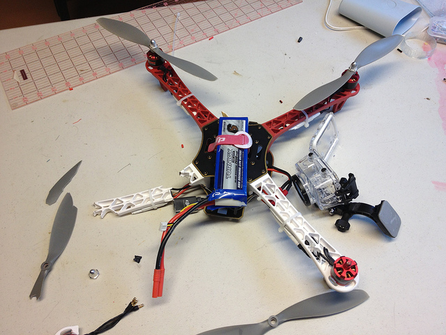

Final Project: concept
We are by now invaded by Unmanned Aerial Vehicles. They spread everywhere and for whatever kind of use, from taking an aerial video of a party to flying over a raging forest fire alerting firefighters, from hovering over a construction site conducting a building inspection to exploring dangerous places like war sites.


The use of such flying robotics in the form of small UAVs, also known as drones, is pervasive now but not only: its commercial growth is predicted to significantly increase and reach several tens billions of dollars worldwide over the next years.

However, in order to achieve this market increase, a multitude of issues needs to be addressed and several improvements need to be done. For example, talking about security, the drones on the market today don’t have anything that complain with obstacle avoidance, so they easily get crashed on people and things by inexperienced pilots. Furthermore, they don’t present any kind of mechanism to cooperate each other, or to obtain smarter behaviours.
- Accordingly to above examples, and due to my interest on A.I., what I want to do is to make a drone with such capabilities. So my goal is to acquire all the know-how on the today’s drones to build a smart quadcopter that offers the following extras:
- obstacle avoidance
- cooperation capabilities
The concept of cooperation I want to realize is intended as another use of the drones: the drones as building block material that can be modularly and autonomously assembled. In this direction I think at this quadcopter like a normal one, but equipped with advanced hardware and software components, and surrounded by a cage, in order to apply more sensors and to enable an autonomous assembly behaviour. I think about the cage as a light cubic frame for simplicity of drones assembling.
The acronym I have chosen for this drone is AAVOID: Autonomous Assembly aVOIding Drone
Here is a draft schema of the Control Unit's hardware architecture: